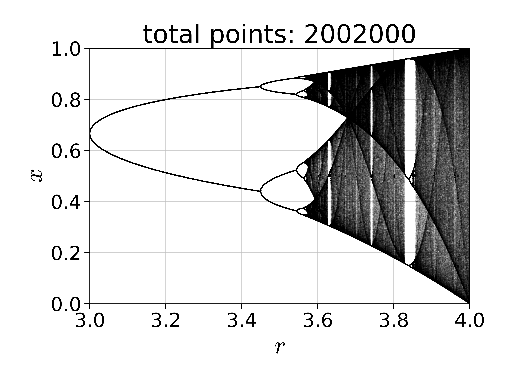
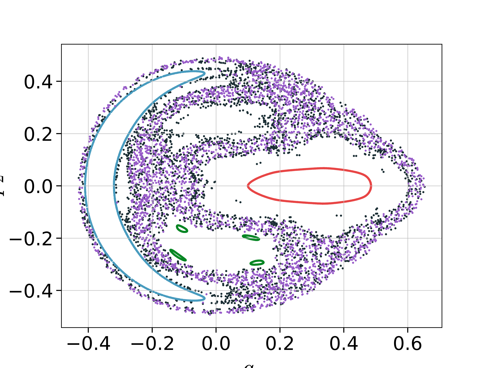
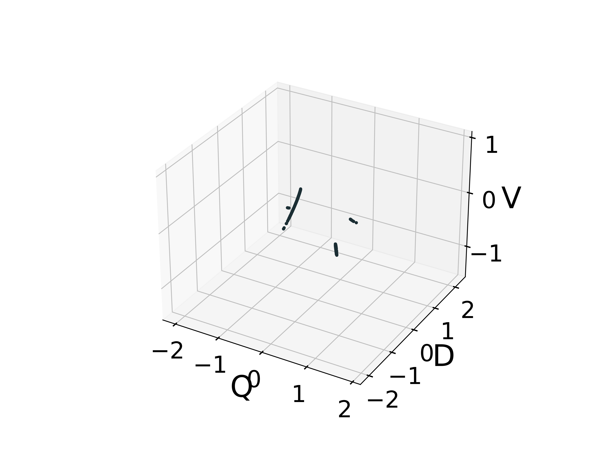
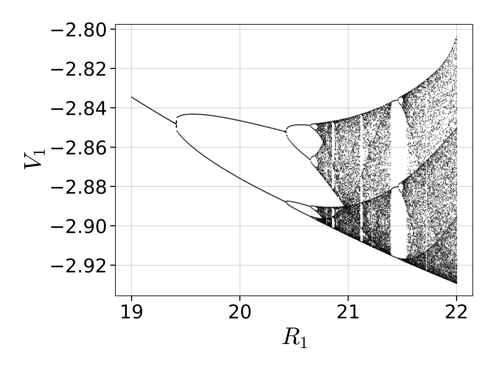

Orbit Diagrams & PSOS
Orbit Diagrams of Maps
An orbit diagram (also called bifurcation diagram) is a way to visualize the asymptotic behavior of a map, when a parameter of the system is changed
ChaosTools.orbitdiagram — Functionorbitdiagram(ds::DiscreteDynamicalSystem, i, p_index, pvalues; kwargs...)Compute the orbit diagram (also called bifurcation diagram) of the given system, saving the i variable(s) for parameter values pvalues. The p_index specifies which parameter of the equations of motion is to be changed.
i can be Int or AbstractVector{Int}. If i is Int, returns a vector of vectors. Else it returns vectors of vectors of vectors. Each entry are the points at each parameter value.
Keyword Arguments
Ttr::Int = 1000: Transient steps; each orbit is evolved forTtrfirst before saving output.n::Int = 100: Amount of points to save for each initial condition.dt = 1: Stepping time. Changing this will give you the orbit diagram of thedtorder map.u0 = nothing: Specify an initial state. Ifnothing, the previous state after each parameter is used to seed the new initial condition at the new parameter (with the very first state being the system's state). This makes convergence to the attractor faster, necessitating smallerTtr. Otherwiseu0can be a standard state, or a vector of states, so that a specific state is used for each parameter.ulims = (-Inf, Inf): only record system states withinulims(only valid ifi isa Int).
See also poincaresos and produce_orbitdiagram.
For example, let's compute the famous orbit diagram of the logistic map:
using DynamicalSystems
using PyPlot
ds = Systems.logistic()
i = 1
pvalues = 3:0.001:4
ics = [rand() for m in 1:10]
n = 2000
Ttr = 2000
p_index = 1
output = orbitdiagram(ds, i, p_index, pvalues; n = n, Ttr = Ttr)
L = length(pvalues)
x = Vector{Float64}(undef, n*L)
y = copy(x)
for j in 1:L
x[(1 + (j-1)*n):j*n] .= pvalues[j]
y[(1 + (j-1)*n):j*n] .= output[j]
end
figure()
PyPlot.title("total points: $(L*n)")
plot(x, y, ls = "None", ms = 0.5, color = "black", marker = "o", alpha = 0.05)
xlim(pvalues[1], pvalues[end]); ylim(0,1)
xlabel("\$r\$"); ylabel("\$x\$")
tight_layout()
Notice that if you are using PyPlot, the plotting process will be slow, since it is slow at plotting big numbers of points.
The function is not limited to 1D maps, and can be applied just as well to any discrete system.
Poincaré Surface of Section
Also called Poincaré map is a technique to reduce a continuous system into a discrete map with 1 less dimension. We are doing this using the function:
ChaosTools.poincaresos — Functionpoincaresos(ds::ContinuousDynamicalSystem, plane, tfinal = 1000.0; kwargs...)Calculate the Poincaré surface of section (also called Poincaré map)[Tabor1989] of the given system with the given plane. The system is evolved for total time of tfinal. Return a Dataset of the points that are on the surface of section.
If the state of the system is $\mathbf{u} = (u_1, \ldots, u_D)$ then the equation defining a hyperplane is
\[a_1u_1 + \dots + a_Du_D = \mathbf{a}\cdot\mathbf{u}=b\]
where $\mathbf{a}, b$ are the parameters of the hyperplane.
In code, plane can be either:
- A
Tuple{Int, <: Number}, like(j, r): the plane is defined as when thejvariable of the system equals the valuer. - A vector of length
D+1. The firstDelements of the vector correspond to $\mathbf{a}$ while the last element is $b$.
This function uses ds and higher order interpolation from DifferentialEquations.jl to create a high accuracy estimate of the section. See also produce_orbitdiagram.
Keyword Arguments
direction = -1: Only crossings withsign(direction)are considered to belong to the surface of section. Positive direction means going from less than $b$ to greater than $b$.idxs = 1:dimension(ds): Optionally you can choose which variables to save. Defaults to the entire state.Ttr = 0.0: Transient time to evolve the system before starting to compute the PSOS.u0 = get_state(ds): Specify an initial state.warning = true: Throw a warning if the Poincaré section was empty.rootkw = (xrtol = 1e-6, atol = 1e-6): ANamedTupleof keyword arguments passed tofind_zerofrom Roots.jl.diffeq...: All other extra keyword arguments are propagated intoinitof DifferentialEquations.jl. Seetrajectoryfor examples.
Performance Notes
This function uses a standard integrator. For loops over initial conditions and/or parameters you should use the low level method that accepts an integrator and reinit! to new initial conditions. See the "advanced documentation" for more.
The low level call signature is:
poincaresos(integ, planecrossing, tfinal, Ttr, idxs, rootkw)where
planecrossing = PlaneCrossing(plane, direction > 0)and idxs must be Int or SVector{Int}.
poincaresos(A::Dataset, plane; kwargs...)Calculate the Poincaré surface of section of the given dataset with the given plane by performing linear interpolation betweeen points that sandwich the hyperplane.
Argument plane and keywords direction, warning, idxs are the same as above.
Here is an example of the Henon-Heiles system showing the mixed nature of the phase space
using DynamicalSystems, PyPlot
hh = Systems.henonheiles()
plane = (1, 0.0)
u0s = [[0.0, -0.25, 0.42081, 0.0],
[0.0, -0.31596, 0.354461, 0.0591255],
[0.0, 0.1, 0.5, 0.0],
[0.0, -0.0910355, 0.459522, -0.173339],
[0.0, -0.205144, 0.449328, -0.0162098]]
figure()
for u0 in u0s
psos = poincaresos(hh, plane, 20000.0; u0 = u0)
scatter(psos[:, 2], psos[:, 4], s = 2.0)
end
xlabel("\$q_2\$"); ylabel("\$p_2\$")
Here the surface of section was the (hyper-) plane that $q_1 = 0$. Some chaotic and regular orbits can be seen in the plot. You can tell the regular orbits apart because they look like a single connected curve. This is the result of cutting a 2-torus by a plane!
Finally here is one more example with a more complex hyperplane:
gis = Systems.gissinger([2.32865, 2.02514, 1.98312])
# Define appropriate hyperplane for gissinger system
const ν = 0.1
const Γ = 0.9 # default parameters of the system
# I want hyperperplane defined by these two points:
Np(μ) = SVector{3}(sqrt(ν + Γ*sqrt(ν/μ)), -sqrt(μ + Γ*sqrt(μ/ν)), -sqrt(μ*ν))
Nm(μ) = SVector{3}(-sqrt(ν + Γ*sqrt(ν/μ)), sqrt(μ + Γ*sqrt(μ/ν)), -sqrt(μ*ν))
# Create hyperplane passing through Np, Nm and 0:
using LinearAlgebra
gis_plane(μ) = [cross(Np(μ), Nm(μ))..., 0]
μ = 0.119
set_parameter!(gis, 1, μ)
figure(figsize = (8,6))
psos = poincaresos(gis, gis_plane(μ), 10000.0, Ttr = 200.0,)
plot3D(columns(psos)..., marker = "o", ls = "None", ms = 2.0);
xlabel("Q"); ylabel("D"); zlabel("V");
Stroboscopic Map
A special case of a PSOS is a stroboscopic map, which is defined for non-autonomous systems with periodic time dependence, like e.g. the Systems.duffing oscillator.
A "cut" through the phase-space can be produced at every period $T = 2\pi/\omega$. There is no reason to use poincaresos for this though, because you can simply use trajectory and get the solution with a certain time sampling rate. For example, this piece of code:
using DynamicalSystems, Plots
ds = Systems.duffing(β = -1, ω = 1, f = 0.3) # non-autonomous chaotic system
frames=120
a = trajectory(ds, 100000.0, dt = 2π/frames, Ttr=20π) # every period T = 2π/ω
orbit_length = div(size(a)[1], frames)
a = Matrix(a)
@gif for i in 1:frames
orbit_points = i:frames:(orbit_length*frames)
scatter(a[orbit_points, 1], a[orbit_points, 2], markersize=1, html_output_format=:png,
leg=false, framestyle=:none, xlims=extrema(a[:,1]), ylims=extrema(a[:,2]))
endProduces this nice animation:

Producing Orbit Diagrams for Flows
The orbitdiagram does not make much sense for continuous systems, besides the trivial case where the system is at a fixed point. In order for orbitdiagram to have meaning one must have a map.
If only there was a way to turn a continuous system into a map... OH WAIT! That is what poincaresos does! By performing successive surfaces of section at different parameter values, one can indeed "produce" an orbit diagram for a flow.
We have bundled this process in the following function:
ChaosTools.produce_orbitdiagram — Functionproduce_orbitdiagram(ds::ContinuousDynamicalSystem, plane, i::Int,
p_index, pvalues; kwargs...)Produce an orbit diagram (also called bifurcation diagram) for the i variable(s) of the given continuous system by computing Poincaré surfaces of section using plane for the given parameter values (see poincaresos).
i can be Int or AbstractVector{Int}. If i is Int, returns a vector of vectors. Else it returns a vector of vectors of vectors. Each entry are the points at each parameter value.
Keyword Arguments
printparams::Bool = false: Whether to print the parameter used during computation in order to keep track of running time.direction, warning, Ttr, rootkw, diffeq...: Propagated intopoincaresos.u0 = nothing: Specify an initial state. Ifnothing, the previous state after each parameter is used to seed the new initial condition at the new parameter (with the very first state being the system's state). This makes convergence to the attractor faster, necessitating smallerTtr. Otherwiseu0can be a standard state, or a vector of states, so that a specific state is used for each parameter.
Description
For each parameter, a PSOS reduces the system from a flow to a map. This then allows the formal computation of an "orbit diagram" for the i variable of the system, just like it is done in orbitdiagram.
The parameter change is done as p[p_index] = value taking values from pvalues and thus you must use a parameter container that supports this (either Array, LMArray, dictionary or other).
See also poincaresos, orbitdiagram.
For example, we will calculate the orbit diagram of the Shinriki oscillator, a continuous system that undergoes a period doubling route to chaos, much like the logistic map!
ds = Systems.shinriki([-2, 0, 0.2])
pvalues = range(19, stop = 22, length = 401)
i = 1
plane = (2, 0.0)
tf = 200.0
p_index = 1
output = produce_orbitdiagram(ds, plane, i, p_index, pvalues;
tfinal = tf, Ttr = 200.0)
figure()
for (j, p) in enumerate(pvalues)
plot(fill(p, length(output[j])), output[j], lw = 0,
marker = "o", ms = 0.2, color = "black")
end
xlabel("\$R_1\$"); ylabel("\$V_1\$")
tight_layout()
- Tabor1989M. Tabor, Chaos and Integrability in Nonlinear Dynamics: An Introduction, §4.1, in pp. 118-126, New York: Wiley (1989)